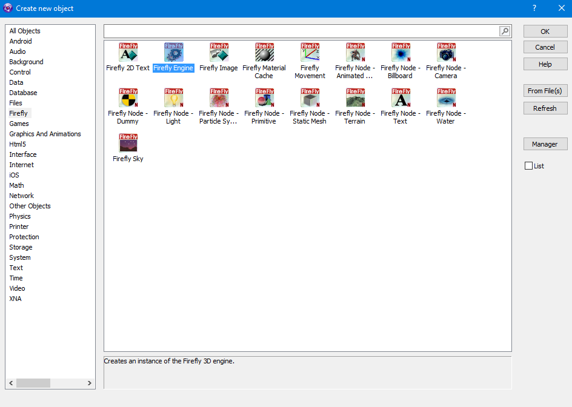
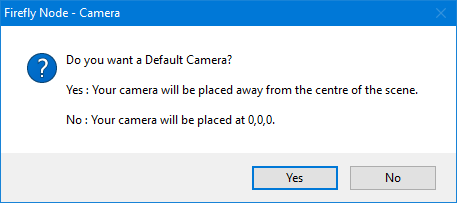
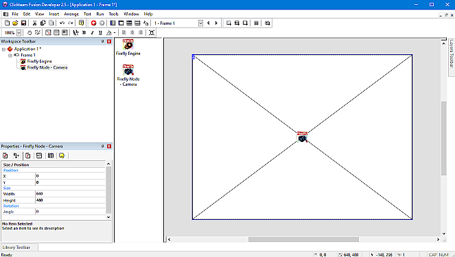
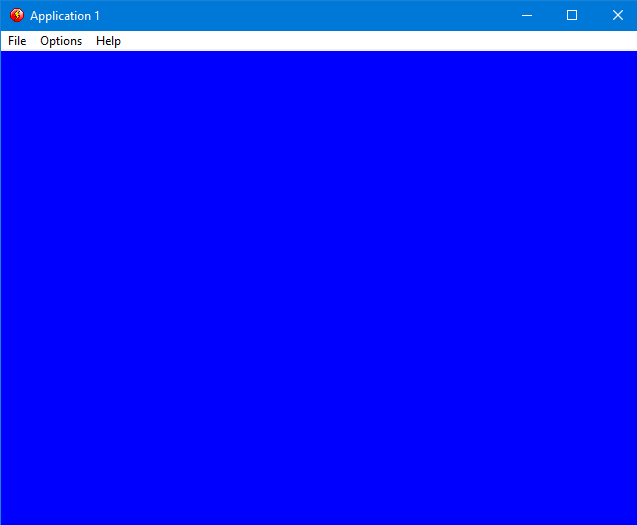

|
OK, what we want to create is a breakout-style game. In a breakout game, you typically have a ball, a bat, and some bricks. In this tutorial, we want to create a super breakout game, with impressive graphics, made in 3D. The first few things every 3d game needs is a world and a camera to look around the world in. For the world we need to add a Firefly Engine object as that powers the world. from the menus select Insert then select New Object, from the list select Firefly and choose Firefly Engine |
||
|  | ||
| OK, we have our world now we need to be able to see into the world, to this we need a camera now you can have loads of different cameras to give for example split screen games 2 different views of the world or for other things such as action cameras which are popular in some games however we are just going to make a simple breakout that uses only 1 camera, so just like you did for the Firefly Engine insert a new object and select the Firefly Node - Camera. | ||
|  | ||
| The Firefly Node - Camera has a few complicated settings so you are given a choice of using the default values which will place a working camera for you without the need for you to be worried about setting it up correctly, click on the YES button to accept the default camera settings. | ||
|  | ||
|
The objects you have just added will be the first 2 you add to pretty much every Firefly game you make, they create and display the world for your game to live in lets take a quick look into that world now, locate the "Run Frame" icon in the icon bar near the top of your display, and click on it. |
||
|  | ||
|
A window then appears and "runs" the Frame you were working on. Notice that none of the white fusion area of the frame is visible. only the empty looking blue void of your Firefly world.
When you are done staring at nothingness, close the window by clicking on its close button : you are now back in the Frame Editor. |
||
{kind=link}